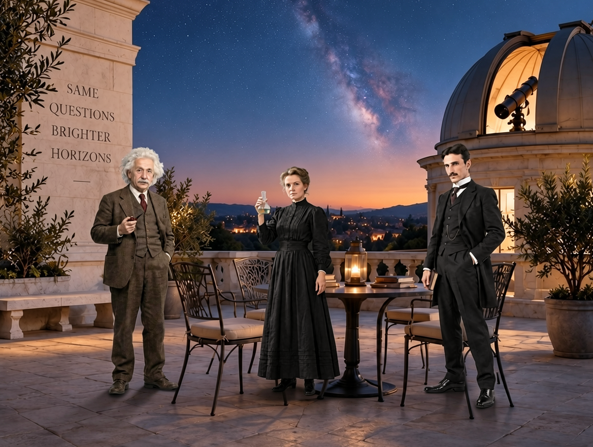
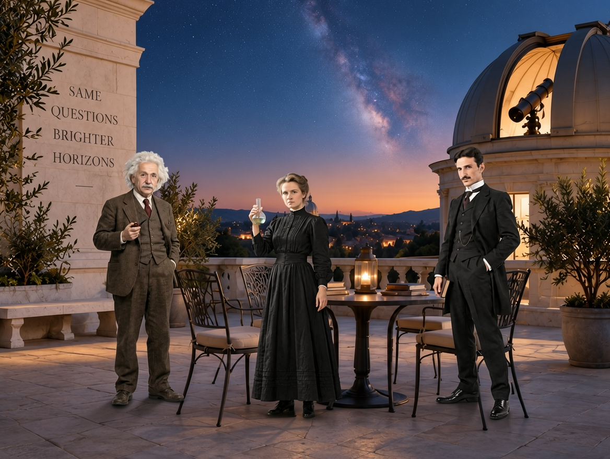
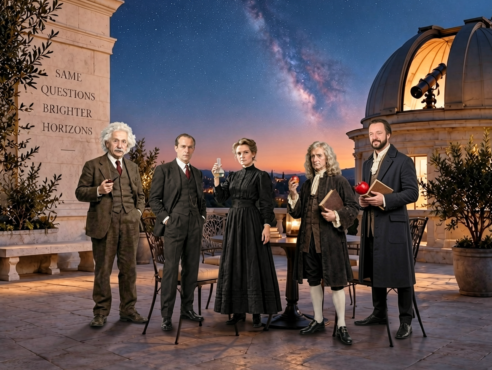
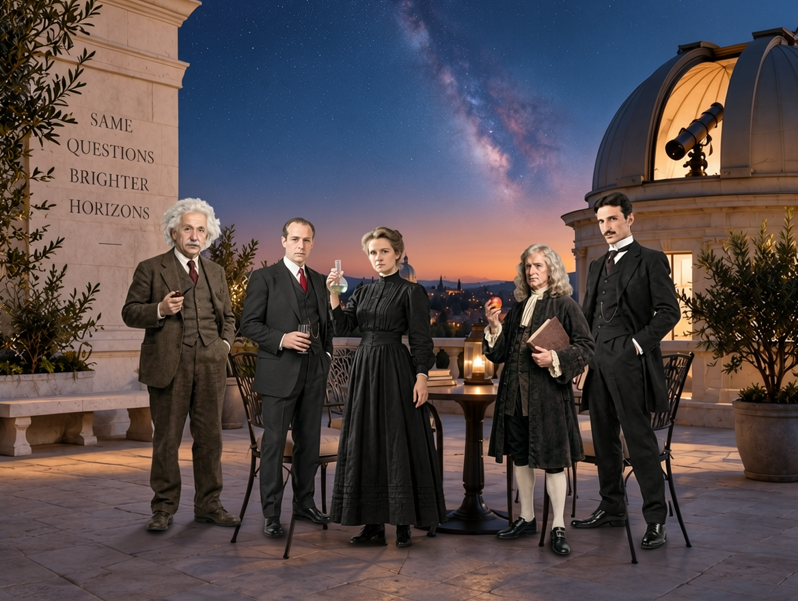
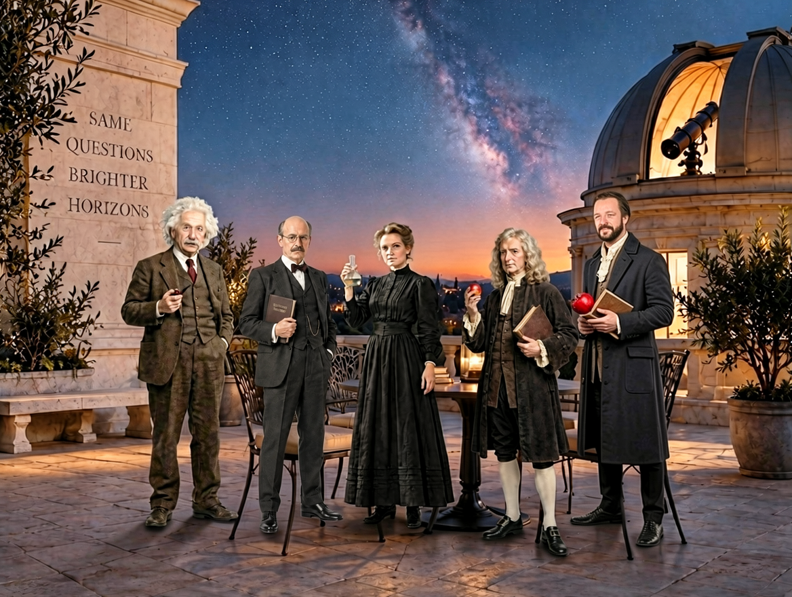
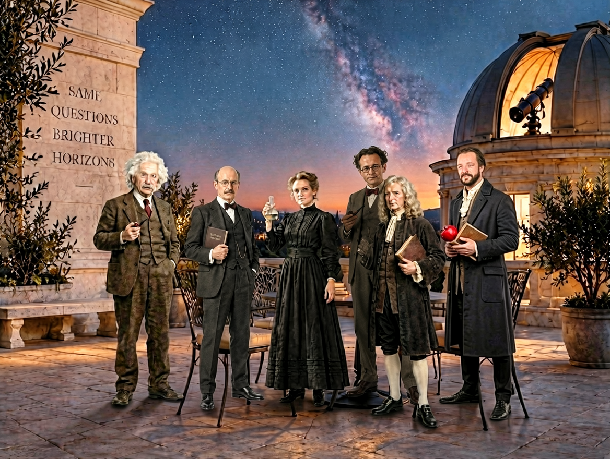
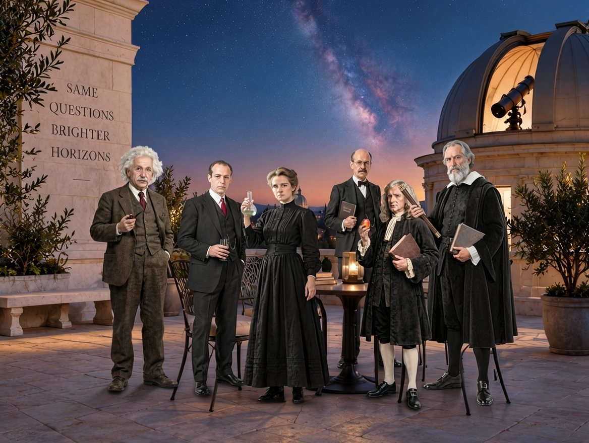

Edit image 1 as the existing scene; it is not an identity reference to replace. Build a natural group portrait on the terrace's free floor, keeping the dome, telescope and furniture intact. Keep each face visible and preserve each reference person's clothing and held objects; no white cutout borders. Add exactly 3 new subjects from images 2 through 4. From image 2, add exactly one white-haired man in a brown three-piece suit holding a pipe: standing on free floor at middle-distance left. From image 3, add exactly one woman in a long black dress holding a glass flask: standing on free floor at middle-distance center. From image 4, add exactly one dark-haired mustached man in a black three-piece suit: standing on free floor at middle-distance right. Preserve their identity, appearance, size and positions, and preserve the original scene, camera and framing. Transfer only the specified subject from each reference, not its background or any text labels. Do not add duplicate copies or extra subjects. Allow only necessary local occlusion, natural lighting and contact shadows around the new additions. Leave room for later additions; do not rearrange existing subjects. The scene should now retain 3 inserted reference subjects in total, in addition to any original scene contents.


Edit image 1 as the existing scene; it is not an identity reference to replace. Build a natural group portrait on the terrace's free floor, keeping the dome, telescope and furniture intact. Keep each face visible and preserve each reference person's clothing and held objects; no white cutout borders. Add exactly 3 new subjects from images 2 through 4. From image 2, add exactly one dark-haired man in a brown suit holding a small glass: standing in an open foreground-left gap without covering existing faces. From image 3, add exactly one man with a receding hairline in a dark suit and red tie: standing in an open foreground-center gap without covering existing faces. From image 4, add exactly one long-haired man in a dark period coat holding a red fruit and book: standing in an open foreground-right gap without covering existing faces. Keep all previously inserted subjects unchanged: white-haired man in a brown three-piece suit holding a pipe; woman in a long black dress holding a glass flask; dark-haired mustached man in a black three-piece suit. Preserve their identity, appearance, size and positions, and preserve the original scene, camera and framing. Transfer only the specified subject from each reference, not its background or any text labels. Do not add duplicate copies or extra subjects. Allow only necessary local occlusion, natural lighting and contact shadows around the new additions. Leave room for later additions; do not rearrange existing subjects. The scene should now retain 6 inserted reference subjects in total, in addition to any original scene contents.


Edit image 1 as the existing scene; it is not an identity reference to replace. Build a natural group portrait on the terrace's free floor, keeping the dome, telescope and furniture intact. Keep each face visible and preserve each reference person's clothing and held objects; no white cutout borders. Add exactly 2 new subjects from images 2 through 3. From image 2, add exactly one bald mustached man with glasses in a dark suit holding a book: standing in a remaining left-center gap without moving earlier people. From image 3, add exactly one gray-bearded man in a dark robe holding a telescope and book: standing in a remaining right-center gap without moving earlier people. Keep all previously inserted subjects unchanged: white-haired man in a brown three-piece suit holding a pipe; woman in a long black dress holding a glass flask; dark-haired mustached man in a black three-piece suit; dark-haired man in a brown suit holding a small glass; man with a receding hairline in a dark suit and red tie; long-haired man in a dark period coat holding a red fruit and book. Preserve their identity, appearance, size and positions, and preserve the original scene, camera and framing. Transfer only the specified subject from each reference, not its background or any text labels. Do not add duplicate copies or extra subjects. Allow only necessary local occlusion, natural lighting and contact shadows around the new additions. Leave room for later additions; do not rearrange existing subjects. The scene should now retain 8 inserted reference subjects in total, in addition to any original scene contents.

Edit image 1 as the existing scene; it is not an identity reference to replace. Build a natural group portrait on the terrace's free floor, keeping the dome, telescope and furniture intact. Keep each face visible and preserve each reference person's clothing and held objects; no white cutout borders. Add exactly 1 new subjects from images 2 through 2. From image 2, add exactly one man with round glasses in a brown suit holding a pipe: standing in a remaining open floor gap beside the group without moving earlier people. Keep all previously inserted subjects unchanged: white-haired man in a brown three-piece suit holding a pipe; woman in a long black dress holding a glass flask; dark-haired mustached man in a black three-piece suit; dark-haired man in a brown suit holding a small glass; man with a receding hairline in a dark suit and red tie; long-haired man in a dark period coat holding a red fruit and book; bald mustached man with glasses in a dark suit holding a book; gray-bearded man in a dark robe holding a telescope and book. Preserve their identity, appearance, size and positions, and preserve the original scene, camera and framing. Transfer only the specified subject from each reference, not its background or any text labels. Do not add duplicate copies or extra subjects. Allow only necessary local occlusion, natural lighting and contact shadows around the new additions. Leave room for later additions; do not rearrange existing subjects. The scene should now retain 9 inserted reference subjects in total, in addition to any original scene contents.

